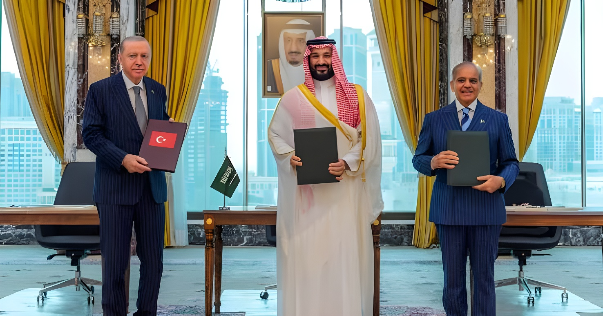

Le 7 août 2026, à La Mecque, le prince héritier saoudien Mohammed ben Salmane, le président turc Recep Tayyip Erdoğan et le Premier ministre pakistanais Shehbaz Sharif ont signé un accord de défense mutuelle : une attaque armée contre l'un des trois États sera désormais considérée comme une attaque contre les trois. Ce pacte tripartite, qui élargit un accord bilatéral saoudo-pakistanais conclu en septembre 2025, marie la puissance nucléaire pakistanaise, l'industrie de défense turque et la puissance financière saoudienne — dans un Moyen-Orient bouleversé par la guerre contre l'Iran et l'onde de choc de la frappe israélienne sur Doha.
Le choix du lieu et du moment n'a rien d'anodin. C'est à La Mecque, ville la plus sacrée de l'islam sunnite, que Mohammed ben Salmane, Recep Tayyip Erdoğan et Shehbaz Sharif ont signé, le 7 août 2026, l'« accord de défense conjointe de La Mecque ». Le texte instaure un mécanisme de défense collective : toute agression armée contre l'un des trois pays sera considérée comme une agression contre les trois. Le communiqué commun reste toutefois évasif sur les modalités concrètes — obligations d'intervention, moyens engagés, chaîne de commandement — laissant planer une ambiguïté volontaire sur la portée réelle de l'engagement.
Cet accord n'est pas une surprise : il prolonge et élargit à la Turquie un pacte bilatéral de défense mutuelle déjà signé entre Riyad et Islamabad le 17 septembre 2025, quelques jours après la frappe israélienne sur Doha. La Turquie et l'Arabie saoudite, déjà proches sur de nombreux dossiers régionaux — notamment leur soutien commun à la nouvelle Syrie d'Ahmed al-Charaa — rejoignent ainsi un attelage qui associe trois poids lourds du monde musulman sunnite.
Le premier maillon de cette alliance remonte à la frappe israélienne du 9 septembre 2025 contre des cadres du Hamas réunis à Doha, sur le territoire d'un allié des États-Unis. L'opération, menée en plein pourparlers sur un cessez-le-feu à Gaza, avait provoqué une onde de choc dans le Golfe : pour la première fois, Israël frappait ouvertement le sol d'un État du Conseil de coopération du Golfe. Riyad y voit la confirmation que les garanties de sécurité américaines ne suffisent plus — un doute déjà nourri en 2019, lorsque Washington n'avait pas répliqué militairement après les frappes iraniennes sur les installations pétrolières saoudiennes. Huit jours plus tard, le 17 septembre 2025, MBS et Shehbaz Sharif signent à Riyad l'« accord de défense mutuelle stratégique » saoudo-pakistanais, dans le cadre duquel plusieurs milliers de soldats pakistanais, avec chasseurs-bombardiers et drones, sont déployés en Arabie saoudite.
Ce rapprochement s'accélère avec le déclenchement, le 28 février 2026, de la guerre américano-israélienne contre l'Iran, qui débute par des frappes ayant tué le guide suprême Ali Khamenei. En représailles, Téhéran frappe Israël mais aussi plusieurs pays du Golfe, dont l'Arabie saoudite — la raffinerie de Ras Tanura, propriété d'Aramco, est endommagée début mars. Le Pakistan, frontalier de l'Iran sur environ 900 kilomètres et lié à la fois à Téhéran et à Riyad, choisit la neutralité officielle : il condamne les frappes américano-israéliennes comme les représailles iraniennes contre les États du Golfe, tout en jouant un rôle actif de médiation, notamment via les « pourparlers d'Islamabad » organisés en avril 2026.
Bien que les trois signataires s'en défendent officiellement, le pacte est largement perçu comme la formalisation d'un « axe sunnite » face à la menace perçue d'un Iran chiite affaibli mais toujours actif via ses réseaux régionaux. La Turquie, l'une des principales forces militaires de l'OTAN, apporte une industrie de défense éprouvée — dont les drones Bayraktar, largement exportés. L'Arabie saoudite, premier exportateur mondial de pétrole du Golfe, met sur la table sa puissance financière et technologique. Le Pakistan, seul État à majorité musulmane doté de l'arme nucléaire, y ajoute une force de dissuasion et une industrie de défense consolidée par des décennies de rivalité avec l'Inde.
« Le Pakistan et la Turquie apportent des industries de défense solides, tandis que l'Arabie saoudite peut contribuer par des dépenses technologiques. »
— Mansoor Ahmed, Centre d'études stratégiques et de défense, Université nationale australienneLa dimension la plus scrutée du pacte reste nucléaire. Le Pakistan dispose d'un arsenal estimé à environ 170 têtes par l'Institut international de recherche sur la paix de Stockholm (SIPRI), en partie financé historiquement par l'Arabie saoudite. Depuis des années, l'hypothèse d'un « parapluie nucléaire » pakistanais étendu à Riyad circule parmi les experts. Pour l'heure toutefois, la posture nucléaire d'Islamabad demeure officiellement tournée vers la dissuasion de l'Inde, et rien dans le texte de l'accord ne mentionne explicitement d'engagement nucléaire — une clarification qui, si elle était rompue, provoquerait des réactions immédiates à Téhéran, Tel-Aviv, New Delhi et Washington.
| Acteur | Position officielle | Intérêt réel |
|---|---|---|
| Arabie saoudite | Défense collective, sécurité régionale | Diversifier ses garanties de sécurité face au doute sur l'allié américain |
| Turquie | Solidarité islamique, autonomie stratégique | Exporter son industrie de défense et peser sur le nouveau Moyen-Orient |
| Pakistan | Alliance historique, non ciblée contre un tiers | Convertir sa puissance militaire en influence politique et financière |
| Israël | Inquiétude officieuse | Surveiller un rapprochement avec une puissance nucléaire |
| Iran | Réaction mesurée, relations historiques rappelées | Éviter d'apparaître isolé sans provoquer une escalade |
| Inde | « Étude des implications » | Contenir le rapprochement Riyad–Islamabad, sa rivale historique |
Côté israélien, un responsable a confié au site Ynet que l'accord était perçu comme « dirigé contre Israël », tandis qu'une éventuelle adhésion future de l'Égypte au pacte ne surprendrait personne à Tel-Aviv. Téhéran, de son côté, adopte un ton nettement plus mesuré que pour le pacte initial de 2025 : les médias officiels iraniens rappellent les « liens historiques profonds » unissant la Turquie et le Pakistan à l'Iran, et écartent l'idée d'un accord dirigé contre la République islamique. New Delhi, enfin, affirme accorder une importance stratégique à son partenariat avec Riyad tout en attendant que l'Arabie saoudite tienne compte des « intérêts et sensibilités » indiens — une réserve diplomatique qui traduit la méfiance persistante envers tout renforcement militaire de son rival pakistanais.
Le pacte de La Mecque ne bouleverse pas, dans l'immédiat, les rapports de force au Moyen-Orient : il ne crée ni « OTAN musulmane » ni alliance militaire intégrée. Mais il révèle une conviction désormais partagée par Riyad, Ankara et Islamabad : la protection extérieure unique, longtemps assurée par les États-Unis, ne suffit plus à garantir leur sécurité dans un Moyen-Orient traversé par les frappes, les blocus et les guerres par procuration. En reliant le Golfe, la Méditerranée et l'Asie du Sud, ce triangle géopolitique inédit — mais fragile, tant les rivalités et les priorités divergentes des trois signataires restent vives — illustre surtout l'émergence de réseaux de sécurité régionaux construits par et pour les puissances moyennes, indépendamment de Washington.